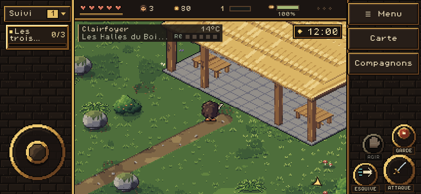
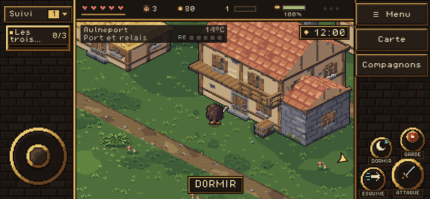
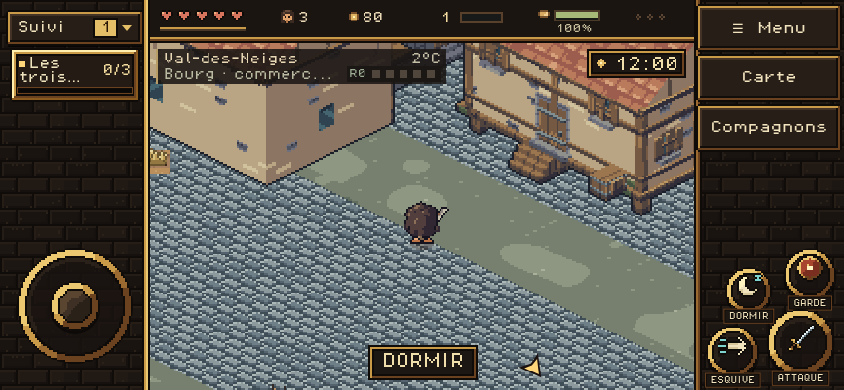
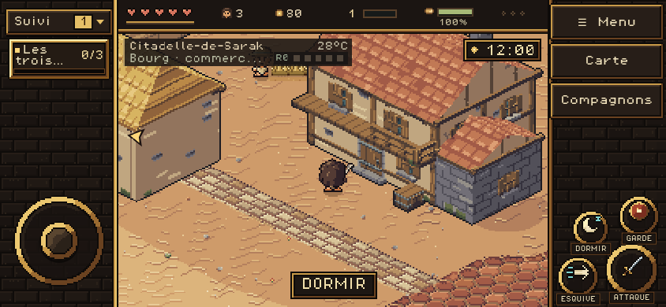
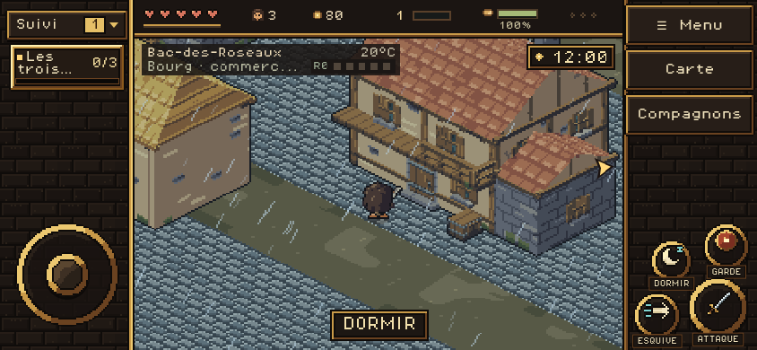
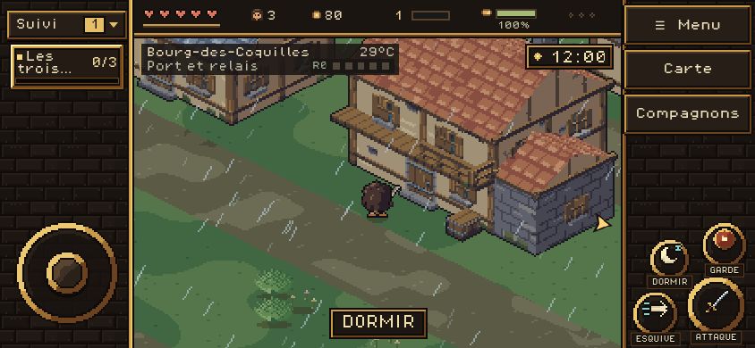
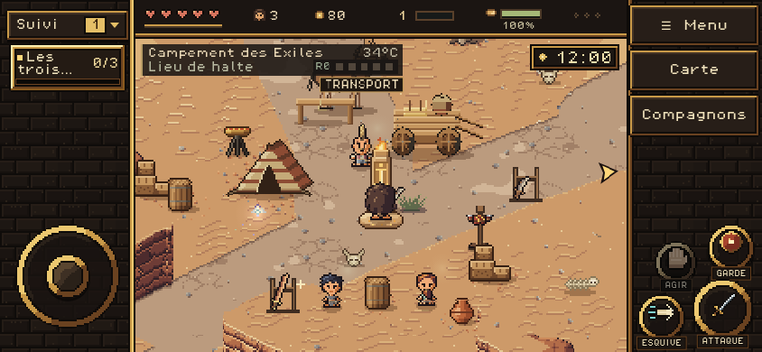

Sources web et iOS comparées, 83 localités et 4 514 bâtiments. Captures du HTML iOS sous Chromium en paysage mobile 844 × 390, à midi. Positions placées aux accès pour le contrôle ; les plans et la simulation sont conservés.
Rapport avec Worker · Rapport sans Worker · Périmètre et limites
Forêt et désert utilisent les sources Piskel ; les autres climats conservent les matières du catalogue isométrique. Les autres localités n’ont pas encore les quartiers détaillés de Clairfoyer. Ce contrôle ne constitue pas un test sur appareil iOS.






